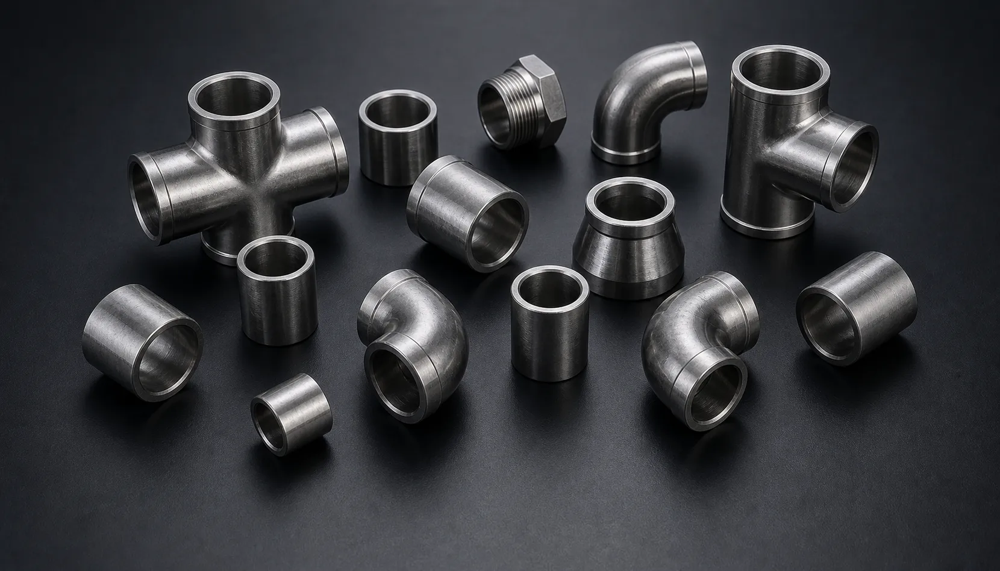

Gururaj Infradesigns is a trusted Monel 400 Pipe Fittings Manufacturer and Supplier in India offering ASTM B366 / ASME SB366 fittings in UNS N04400 alloy, including elbows, tees, reducers, couplings, unions, and caps for marine, offshore, chemical processing, oil & gas, and industrial piping applications.
Monel 400 Pipe Fittings are high-performance nickel-copper alloy fittings known for their excellent resistance to seawater, saltwater, alkalis, and a wide range of corrosive industrial environments. These fittings are widely used in marine engineering, offshore platforms, chemical processing plants, heat exchangers, and power generation facilities where durability and corrosion resistance are essential. Gururaj Infradesigns is a trusted Monel 400 Pipe Fittings Manufacturer in India, supplying premium-quality fittings designed for demanding industrial applications.
Our product range includes elbows, tees, reducers, pipe caps, stub ends, crosses, couplings, unions, plugs, and swage nipples manufactured to international standards. Monel 400 Pipe Fittings offer an excellent combination of strength, corrosion resistance, and long-term reliability, making them a preferred choice for critical piping systems.

Monel 400, also known as UNS N04400, is a nickel-copper alloy containing approximately 63% nickel and 28-34% copper. The alloy is widely recognized for its outstanding resistance to seawater corrosion, hydrofluoric acid, sulfuric acid, and various alkaline solutions. Its unique composition provides excellent mechanical properties and corrosion resistance across a broad range of industrial environments.
As part of our comprehensive range of Nickel Alloy Pipe Fittings, Monel 400 Pipe Fittings are widely used in marine, offshore, chemical processing, and oil & gas industries. Their ability to maintain strength and corrosion resistance in harsh operating conditions helps improve equipment reliability and reduce maintenance requirements.
| Parameter | Details |
|---|---|
| Product | Monel 400 Pipe Fittings |
| Grade | Monel 400 (UNS N04400) |
| Specifications | ASTM B366 / ASME SB366 |
| Standards | ASME/ANSI B16.9, ASME B16.28, MSS-SP-43 |
| Dimensions | ANSI/ASME B16.11 & BS3799 |
| Product Types | Elbow, Tee, Reducer, Pipe Cap, Stub End, Cross, Union, Coupling, Plug, Swage Nipple |
| Size Range | 1/8" NB to 48" NB |
| Forged Fittings Size | 1/8" to 4" |
| Type | Seamless / Welded / Fabricated |
| Thickness | SCH 5S, SCH 10S, SCH 40S, SCH 80S, SCH 160S, SCH XXS |
| Pressure Class | 2000 LBS, 3000 LBS, 6000 LBS, 9000 LBS |
| End Connections | Socket Weld (SW), Screwed (NPT, BSP, BSPT), Butt Weld |
| Bending Radius | R=1D, 2D, 3D, 5D, 6D, 8D, 10D or Custom |
| Certification | EN 10204 3.1 / MTC Available |
Monel 400 Pipe Fittings are highly resistant to seawater and saltwater corrosion, making them one of the most widely used materials for marine and offshore applications. This resistance helps extend service life in harsh coastal and marine environments.
The alloy offers a strong combination of toughness and durability across a wide temperature range. This allows Monel 400 Pipe Fittings to perform reliably in demanding industrial conditions.
Monel 400 provides excellent resistance to alkalis, hydrofluoric acid, and various corrosive chemicals commonly found in process industries. This makes it suitable for critical chemical handling applications.
Unlike many conventional materials, Monel 400 maintains its corrosion resistance even in fast-flowing seawater systems, helping reduce maintenance and replacement costs.
Its combination of corrosion resistance, strength, and durability contributes to lower lifecycle costs and dependable performance in industrial piping systems.
| Element | Composition (%) |
|---|---|
| Nickel | 63.0 Min |
| Copper | 28.0 – 34.0 |
| Iron | Max 2.5 |
| Manganese | Max 2.0 |
| Carbon | Max 0.30 |
| Silicon | Max 0.50 |
| Sulfur | Max 0.024 |
| Property | Value |
|---|---|
| Tensile Strength | 550 MPa Min |
| Yield Strength | 240 MPa Min |
| Elongation | 35% Min |
| Density | 8.80 g/cm³ |
| Melting Range | 1300°C – 1350°C |
Monel 400 Pipe Fittings are extensively used in seawater piping systems, offshore platforms, shipbuilding, and coastal processing facilities where corrosion resistance is critical for long-term reliability.
The alloy performs exceptionally well in handling acids, alkalis, and various chemical compounds, making it suitable for reactors, processing units, and chemical transfer systems.
Monel 400 Pipe Fittings are widely used in offshore oil and gas operations where exposure to seawater and harsh environmental conditions is common.
The alloy's resistance to corrosion and erosion makes it an ideal choice for heat exchanger and condenser systems operating with seawater and industrial cooling fluids.
Power generation facilities utilize Monel 400 fittings in critical piping systems requiring durability, corrosion resistance, and long-term operational performance.
| Property | Monel 400 | Monel K500 | Nickel 200 |
|---|---|---|---|
| Base Alloy | Nickel-Copper | Nickel-Copper Alloy with Added Strength | Commercially Pure Nickel |
| Corrosion Resistance | Excellent | Excellent | Very Good |
| Seawater Resistance | Excellent | Excellent | Good |
| Mechanical Strength | High | Higher | Moderate |
| Wear Resistance | Good | Superior | Moderate |
| Marine Applications | Extensive | Extensive | Limited |
| Chemical Processing | Excellent | Very Good | Good |
| Offshore Service | Excellent | Excellent | Moderate |
| Cost Consideration | Moderate | Higher | Moderate |
| Typical Use | Marine & Chemical Industries | High-Strength Marine Applications | Chemical Processing Systems |
Monel 400 Pipe Fittings are widely preferred for marine and seawater applications due to their excellent corrosion resistance and reliable mechanical properties. Where higher strength is required, many industries choose Monel K500 Pipe Fittings, while Nickel 200 Pipe Fittings are commonly selected for applications requiring high purity nickel and excellent Fittings are commonly selected for applications requiring high purity nickel and excellent resistance to caustic environments.
| Finish | Benefits |
|---|---|
| Pickled | Improves surface cleanliness and corrosion resistance |
| Passivated | Enhances surface protection |
| Polished | Provides a smooth and clean finish |
| Mill Finish | Suitable for standard industrial applications |
Proper finishing helps maximize corrosion resistance and maintain the long-term performance of Monel 400 Pipe Fittings in demanding service environments.
Gururaj Infradesigns supplies Monel 400 Pipe Fittings in a wide range of sizes, schedules, and configurations for marine, offshore, chemical processing, and industrial piping applications. Our products are supplied to EPC contractors, engineering companies, fabricators, and industrial buyers across India.
With a focus on quality, technical support, and timely delivery, we help customers source dependable nickel alloy pipe fittings that meet project specifications and operational requirements.
At Gururaj Infradesigns, quality remains an important part of our manufacturing and supply process. All pipe fittings undergo inspection for dimensional accuracy, workmanship, and material compliance before dispatch.
As an ISO Certified Company, we are committed to supplying reliable piping components that meet industrial expectations for quality, consistency, and performance.
Selecting the right nickel alloy pipe fitting depends on operating conditions, chemical exposure, temperature, pressure, and corrosion requirements. Choosing the correct alloy helps improve equipment reliability, operational safety, and long-term service life. Our team can assist in selecting the most suitable fitting grade, size, and specification based on your project requirements. We work closely with engineers, consultants, EPC contractors, and industrial buyers to provide practical guidance and dependable piping solutions for demanding industrial environments.